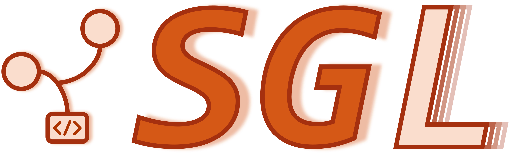
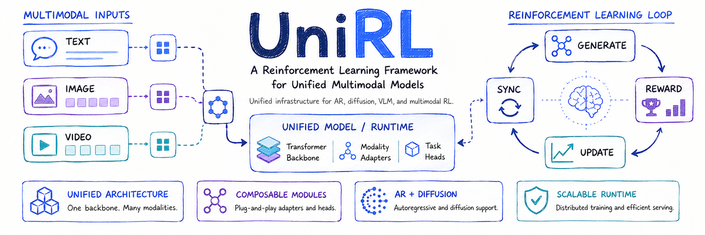
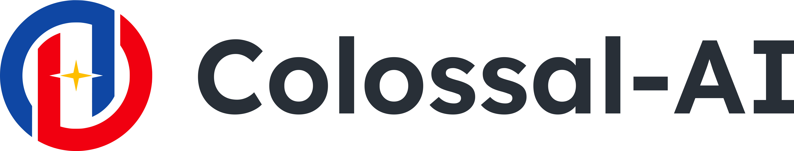
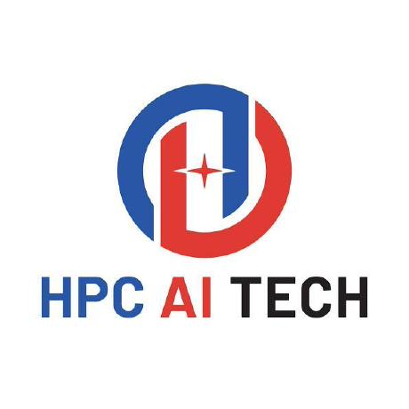

arXiv · 2026
JarvisHub: An Open Harness for Canvas-Native Multimodal Creative Agents
arXiv preprint · July 2026
AI SYSTEMS · DEEP LEARNING
You can call me Michael.
Building the systems behind
intelligent models.
I work at the intersection of deep learning and distributed systems, with an interest in making large-scale model training and inference more efficient.
My background includes AI studies at The University of Hong Kong, a bachelor's degree from Nankai University, and experience at Kuaishou (Kling Infra), Huawei Hong Kong Research Institute, HPC-AI Tech, and Baidu.
01 / RESEARCH
From learning objectives
to practical intelligence.
arXiv preprint · July 2026

International Conference on Machine Learning
IEEE International Symposium on Industrial Electronics
02 / OPEN SOURCE
Selected contributions, most recent first.

Contributed a fix to grouped diffusion inference, ensuring the residency manager is installed before use.
Latest merged contribution ·

Contributions to distributed training, rollout engines, expert parallelism, and training efficiency.
Latest merged contribution ·

Built training systems and designed LLM inference infrastructure during my time at HPC-AI Tech.
Latest merged contribution ·
Contributed to automatic parallelism, including FLOPs estimation and device-mesh fixes.
Latest merged contribution ·
Summer Intern · Beijing
Vision-language model (VLM) training.
Research Intern · Hong Kong

Systems Engineer · Beijing
Built training systems and designed an inference framework for large language models.
Intern · Beijing
ML systems engineering for PaddlePaddle.
Master's studies · Artificial Intelligence
Bachelor's degree · Intelligent Science and Technology
BEYOND THE SCREEN
Basketball, fitness, cooking, and a good movie. Also: sneakers, music, and an enduring fascination with mechanical keyboards.
2023 / 2021 National Encouragement Scholarship
2021 MCM · Honorable Mention
2022 EMNLP · Secondary Reviewer
2022 Provincial Second Prize · National College Students' Innovation and Entrepreneurship Training Program
2021 Provincial Second Prize · CUMCM
2021 Outstanding Student Leader of the College · Finalist
GOOD WORK STARTS WITH A CONVERSATION